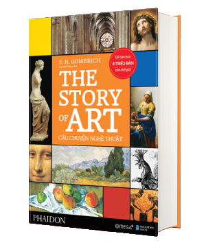

GIỚI THIỆU
“The Story of Art" (Câu Chuyện Nghệ Thuật) được in lần đầu năm 1950
và trong 70 năm qua, được dịch ra gần 30 thứ tiếng và hơn tám triệu
bản đã được bán ra trên toàn thế giới. Điều đó khiến tác phẩm trở
thành cuốn sách nghệ thuật bán chạy nhất mọi thời đại và là tác phẩm
nhập môn nghệ thuật thị giác cho vô số thế hệ độc giả.
E. H. GOMBRICH
(1909 – 2001)
Sinh ra ở Vienna vào năm 1909 và trở thành thành viên của Viện
Warburg ở London vào năm 1936, Gombrich giữ chức vụ là giám đốc và
giáo sư chuyên về Lịch sử Truyền thống Cổ điển ở Đại học (Liên hợp)
London từ năm 1959 đến khi về hưu vào năm 1976. Ông được phong hàm
Hiệp sĩ năm 1972 và được trao Huân chương Công trạng năm 1988, cùng
rất nhiều những giải thưởng và danh hiệu khác bao gồm The Goeth
Prize (1994) và the Gold Medal of the City of Vienna (1994).
Gombrich mất vào tháng 11 năm 2001.